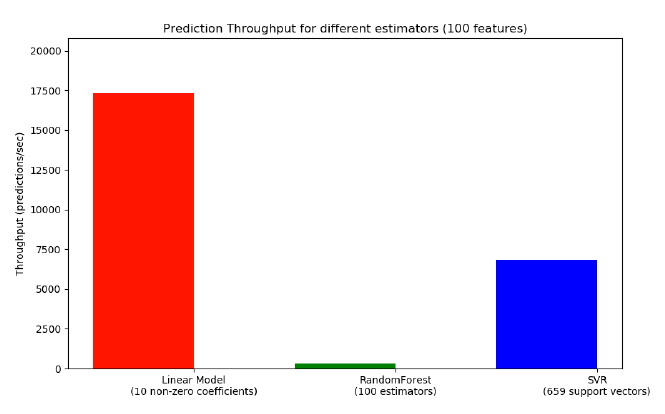

Производительность вычислений
В scikit-learn производительность вычисления предсказаний зависит от:
- количества фичей
- распределения и разреженности данных
- временной сложности алгоритма
- извлечения фичей
Количество фичей
Библиотека хорошо оптимизирована под небольшие дата-сеты, поэтому количество фичей начинает оказывать значительное влияние на время предсказания для данных с 250+ фичами.
Распределение и разреженность данных
Вычисления по разреженным дата-сетам (более 90% значений) можно улучшить по времени с помощью ScyPy, т.к. библиотека оптимизирована по потреблению кеша CPU. Подробнее о том, как готовить разреженные данные, можно посмотреть в документации ScyPy
Временная сложность алгоритмов
С ростом временной сложности падает производительность вычислений алгоритма на предсказаниях. В примерах - зависимость задержки вычисления предсказания от временной сложности линейных моделей, SVM и ансамблей.
В линейных моделях используется схожая решающая функция, поэтому время предсказаний для разных линейных моделей зависит примерно одинаково от временной сложности модели. В алгоритмах с нелинейными кернелами вычислительная производительность зависит от количества векторов (чем больше, тем производительность меньше). Задержка вычисления предсказания возрастает линейно для SVM (для регрессора и классификатора) с ростом числа саппортных векторов. Для ансамблей наибольшее значение имеет количество решающих деревьев и их глубина.
Про временную сложность построения алгоритмов и подробнее про сложность расчета предсказаний можно почитать в отдельной статье.
Извлечение фичей
На самом деле, препроцессинг данных занимает самую значительную часть времени в выдаче предсказаний. Часто очистка и трансформация данных может увеличивать задержку выдачи предсказаний в сотни раз, поэтому этот процесс необходимо постоянно внимательно и аккуратно улучшать.
Пропускная способность предсказаний
Еще одна важная метрика производительности алгоритма - это пропускная способность, определяющая количество предсказаний за заданное время. В примере пропускная способность различных алгоритмов scikit-learn.

Основной способ повышения пропускной способности предсказывающей модели - это увеличение количества экземпляров модели и распределение запросов на предсказания между экземплярами.
Больше информации и примеров про производительность вычислений scikit-learn можно прочитать в технической документации (смотрите раздел 7 user guide).